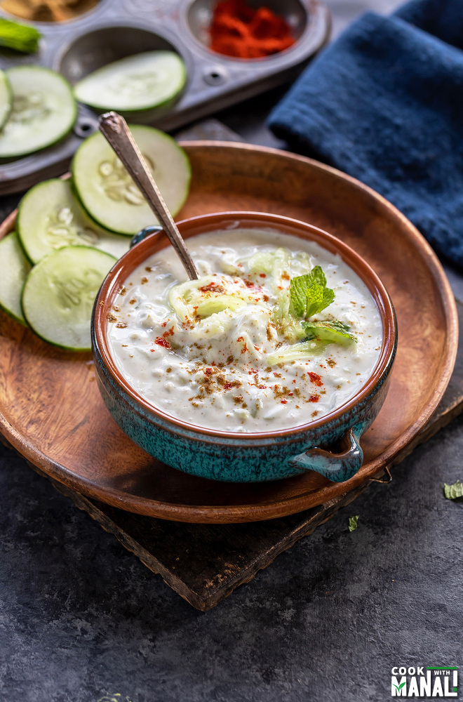

How to prepare Raita

Description
Quick and easy Cucumber Raita makes the perfect accompaniment to Indian meals.It’s cooling and refreshing flavors go so well as a side with curries or you can also use it as a dip.
Raitas have always been an indispensable part of Indian food. Growing up, there was always a raita on our lunch for most days.
Ingredients
- Cucumber
- Yogurt
- Spices
- Herbs
Steps
- Before, you start peel the cucumber and grate it using a grater.
- Then add the grated cucumber to the yogurt and mix.
- Stir in the chopped mint leaves and mix.
- Garnish with mint and serve cucumber raita as a side with any Indian meal or with biryanis and pulao.